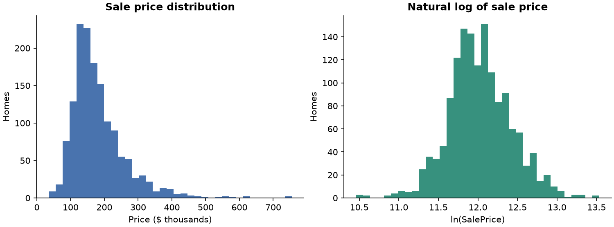
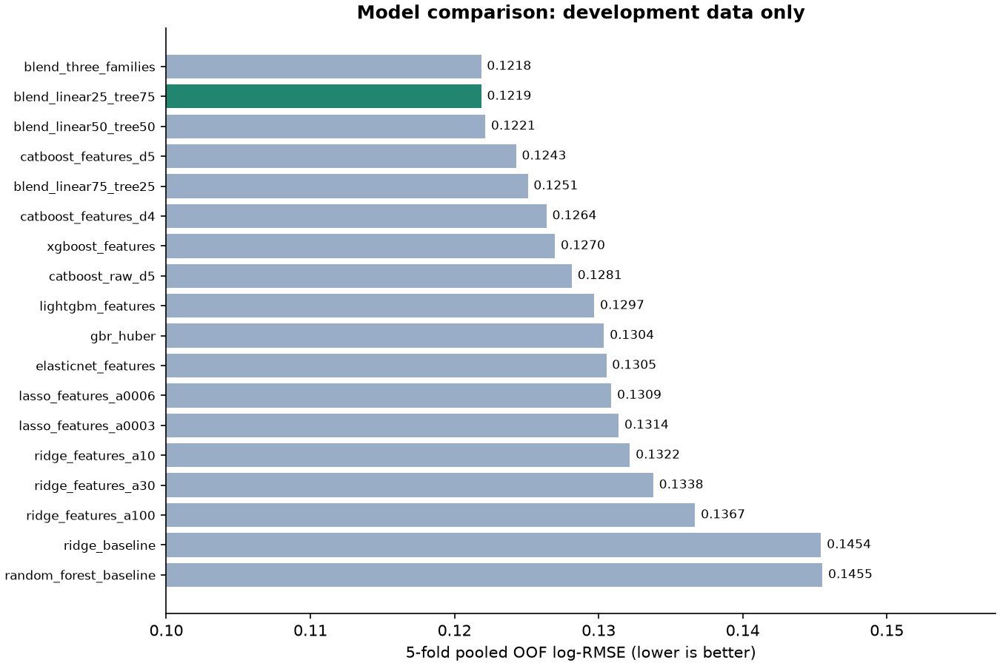
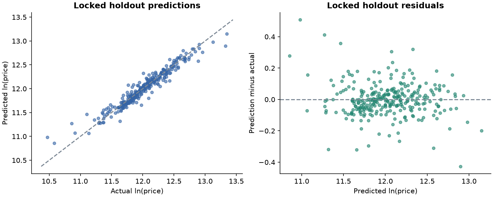

Kaggle · House Prices · 2026-10-15 · 用户已提交首版，线上分数已记录
房价预测：基线、特征工程与模型融合
使用你提供的官方 ZIP。训练集 1,460 行、79 个特征；测试集 1,459 行。目标采用自然对数 ln(SalePrice)，预测后通过 exp 转回美元。log-RMSE 越小越好。
Ridge 基线 · 开发集 5 折
0.14543
Kaggle 线上结果
用户于 2026-10-15 反馈首版 Public Score：0.11969，按对话记录关联推荐的 submission.csv。该分数由用户提供，未通过 Kaggle 接口独立核验。开发集 5 折验证是 0.12186，两者接近；样本不同，不能把差值解释为模型提升。
最终选择
blend_linear25_tree75：elasticnet_features × 25%, catboost_features_d5 × 75%。在对数空间加权，因此最终房价是各模型价格预测的加权几何平均。开发集相对 Ridge 基线降低 16.2% 的 log-RMSE。绝对最低的候选分数是 0.12185；在距最低值 0.0003 以内的方案中，优先选择模型数量更少的组合，再比较误差。此选择在查看预留集之前完成。
已生成 submission.csv（推荐）以及 submission_baseline.csv（对照）。检查了行数、列名、Id 顺序、有限且为正的预测值。推荐文件价格范围：$44,839–$495,533。
验证设计与可信边界
按房价十分位分层，固定 seed=42 留出 292 行（20%）作为最终检查集；其余 1,168 行用于 5 折交叉验证。缺失值填补、偏态列选择、缩放和类别编码均只在各折训练数据上拟合。Id 不参与建模。验证集从未用于早停，也没有删除异常验证样本。
先比较 18 个候选方案（含固定权重融合），仅按开发集 OOF 指标选定模型，再一次性检查预留数据；检查后不改模型或参数。预留集 Ridge 基线为 0.12668，所选方案为 0.10630，变化为 16.1% 改善。开发集最优分数有模型选择偏差，预留结果只代表这个拆分；两者都不是 Kaggle 线上分数。
最后用全部 1,460 行重新训练选定模型，保留拟合后的模型及预测分量。测试集没有真实房价，不能在本地算出比赛分数。
数据与特征处理
区分字符串 None 和真正的 NA：MasVnrType 的 864 个 None 表示无石材贴面，真正缺失只有 8 条。数值缺失采用训练折中位数，类别缺失使用独立标记；MSSubClass 按类别处理。
加入总面积、完成面积、卫浴数量、户外面积、房龄、装修后年数、设施有无、质量等级、质量与面积交互、月度周期等特征。线性模型对训练折中偏态的非负数值做 log1p 变换。CatBoost 使用原生类别特征。

所有实验

| 模型 |
OOF log-RMSE |
折间标准差 |
5 折总耗时（秒） |
| blend_three_families |
0.12185 |
0.01542 |
0.0 |
| blend_linear25_tree75 |
0.12186 |
0.01354 |
0.0 |
| blend_linear50_tree50 |
0.12214 |
0.01588 |
0.0 |
| catboost_features_d5 |
0.12427 |
0.01139 |
43.0 |
| blend_linear75_tree25 |
0.12509 |
0.01836 |
0.0 |
| catboost_features_d4 |
0.12638 |
0.01250 |
32.0 |
| xgboost_features |
0.12697 |
0.00989 |
4.0 |
| catboost_raw_d5 |
0.12814 |
0.01223 |
38.8 |
| lightgbm_features |
0.12970 |
0.00884 |
4.9 |
| gbr_huber |
0.13038 |
0.01284 |
28.1 |
| elasticnet_features |
0.13053 |
0.02093 |
2.9 |
| lasso_features_a0006 |
0.13088 |
0.02256 |
0.8 |
| lasso_features_a0003 |
0.13139 |
0.02453 |
4.7 |
| ridge_features_a10 |
0.13217 |
0.01755 |
0.2 |
| ridge_features_a30 |
0.13379 |
0.01989 |
0.2 |
| ridge_features_a100 |
0.13670 |
0.02240 |
0.2 |
| ridge_baseline |
0.14543 |
0.02762 |
0.1 |
| random_forest_baseline |
0.14553 |
0.01220 |
4.3 |
误差诊断
Id 524 和 1299 的居住面积超过 4,000 平方英尺，但售价低于 $300,000；它们会显著影响部分折的误差。本轮保留全部样本。仅供诊断：开发集排除其中的 2 条后的 log-RMSE 是 0.11456，这个数不参与模型选择，也不应与完整样本分数混用。

文件与复现
实验指标 CSV · 固定方案与融合权重 · 预留集指标 · 官方数据校验记录 · 运行说明
首版线上结果已保存到 kaggle_results.json。后续实验继续以本地交叉验证选择方案，再用有限的线上提交检查泛化表现。 比赛页面